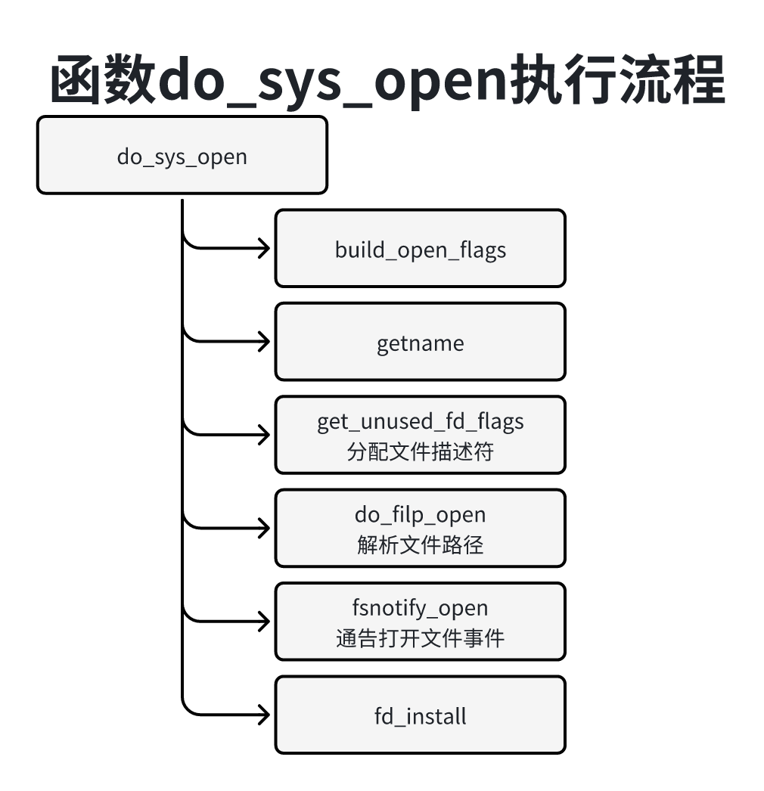
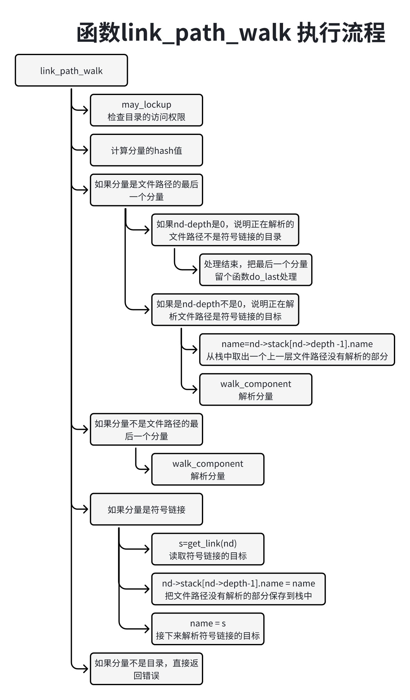
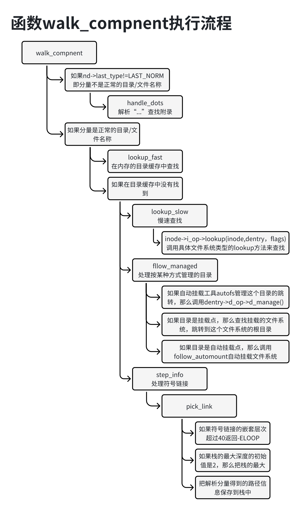
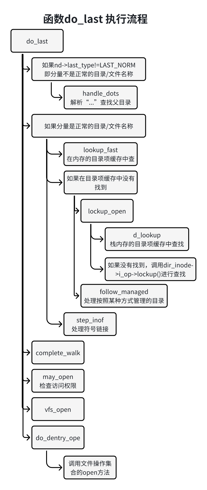
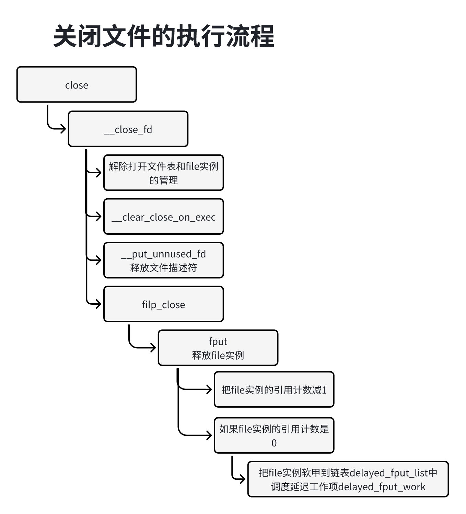

进程读写文件之前需要打开文件，得到文件描述符，然后通过文件米OA舒服度记录的内存读写文件。
内核提供了两个打开文件的系统调用：
1、int open(const char *pathname, int flags, mode_t mode);
2、int openat(int dirft, const chat *parthname, int flags, mode_t mode);
如果打开文件成功，那么返回文件描述符，值大于等于0，如果打开失败返回值小于0。
参数pathname是文件路径，可以是相对路径（不以/开头）也可以是绝对路径。
参数dirtfs是打开一个目录后得的的文件描述符，作为相对路径的基准目录。如果文件路径是相对路径，那么openat解释为相对路径描述符dirfs引用的目录，open解释为相对调用进程的当前工作目录。如果文件路径是绝对路径，openat忽略参数dirfd。
参数flags必须包含一种访问模式：OO_RDOBNLY(只读)、O_WRONLY(只写)或O_RDWR（读写）。
参数flags可以包含多个文件创建标志和文件状态标志。两组标志的区别是：文件创建标志只影响打开操作，文件状态标志硬性后面的读写操作。
文件创建标志包括如下：
1、O_CLOEXEC：开启close-on-exec标志，使用系统调用execve()装载程序的时候关闭文件。
2、O_CREAT：如果文件不存在，创建文件。
3、O_DIRECTORY：参数pathname必须是一个目录。
4、O_EXCL：通常和标志位O_CREAT联合使用，用来创建文件。如果文件已经存在，那么open()事变，返回错误EEXIST。
5、O_NOFOLLOW：不允许参数pathname是符号链接，即最后一个分量不能时符号练链接，其他分量可以是符号链接。如果参数pathname是符号链接，那么打开失败返回错误号ELOOP。
6、O_TMPFILE：创建爱你妹有名字得利时普通文件，参数pathname指定目录。关闭文件的时候，自动删除文件。
7、O_TRUNC：如果文件已经存在，是普通文件，并且访问模式允许写，那么把文件截止到长度为0。
文件状态标志包含如下：
1、O_APPEND：使用追加模式打开文件，每次调用write写文件的时候写到为文件末尾。
2、O_ASYNC：启用信号驱动的输入/输出，当输入输出可用的时候，发送信号通知进程，默认的信号是SIGIO。
3、O_DIRECT：直接读写存储设备，不使用内核的页缓存，。虽然会降低读写速度，但是在某些情况下有用处，例如应用程序使用自己的缓冲区，不需要使用宏内核的页缓存。
4、O_DSYNC：调用write写文件时，把数据和检索数据所需要的原数据写号到存储设备。
5、O_LARGEFILE：允许打开长度超过4GB的大文件。
6、O_NOATIME：调用read读文件时，不要更新文件的访问时间。
7、O_NONBLOCK：使用非阻塞模式打开文件，open()和以后does操作不会导致调用进程阻塞。
8、O_PATH：获得文件描述符有两个用户，指示在目录树中的位值以及执行文件描述符层次的操作。不会真正打开文件，不能执行读操作和写操作。
9、O_SYNC：调用wirte写文件时，把数据和相关的额元数据写回到存储设备。
参数mode指定创建新文件时的文件模式。当参数flags指定标志位O_CREAT或O_TMPFILE的时候，必须指定参数mode，其他情况下忽略参数mode。
参数mode可以得到下面的这些标准的文件模式位组合：
1、S_IRWXU(00700)：以0开头表示八进制，用户有读写和执行权限。
2、S_IRUSER(00400)：用户有读权限。
3、S_IWUSR(00200)：用户有读权限。
4、S_IXUSER(00100)：用户有执行权限。
5、S_IRWXG(00070)：文件拥有者所在组的其他用户有读全新。
6、S_IEGRP(00040)：文件游泳者所在组的其他用户有读权限。
7、S_IWGPR(00020)：文件拥有者所在组的其他用户有写权限。
8、S_IXGPR(00010)：文件拥有者所在组的其他用户有执行权限。
9、S_IRWXO(000007)：其他组的用户有读、写和执行权限。
10、S_IROTH(000004)：其他组的用户有读权限。
11、S_IWOTH(000002)：其他组的用户有写权限。
12、S_IXOTH(000001)：其他班组的用户有执行权限。
参数mode可以包含下面这些Linux私有的文件模式位：
1、S_ISUID(0004000)：set-user-ID位。
2、S_ISGID(0002000)：set-group-ID位。
3、S)ISVTX(0001000)：粘滞（stuky）位。
glibc库基于系统调用封装了下面这些打开文件的库函数：
1、int open(const char *pathname, int flags);
2、int open(const char *pathname, int flags, mode_t mode);
3、int openat(int dirfd, const char *pathname, int flags);
4、int openat(int dirfd, const char *pathname, int flags, mode_t mode);
5、FILE *fopen(const char *pathname, const char *mode);
一个进程能够打开的文件的最大数量是由限制的，有两重限制：
1、基于进程的限制，默认是1024，文件描述符的范围是0-1023，如果进程想要打开超过1024个文件，可以调用文件系统调用setrlimit来调整上限，把参数resource设置为RLIMIT_NOFILE。
11inti setrlimit(int resouce, const struct rlimit *rlim);2、全局限制，默认值是（1024 * 1024）可以通过文件”/proc/sys/nr_open“来调整，会影响每个进程。
21// 位置：fs/file.c2unsigned int sysctl_nr_open __read_mostly = 1024 * 1024;可以执行命令”ls /proc/[pid]/fd“查看进程打开了哪些文件描述符；执行命令”ls /proc/[pid]/fd -l“查看每个文件描述符对应哪个文件。
打开文件的主要步骤如下：
1、需要在父目录的数据中查找文件对应的目录项，从目录项得到索引节点的编号，然后在内存中创建索引节点的副本。因为各种文件系统类型的物理结构不同，所以需要提供索引节点操作集合的lockup方法和文件操作集合的open方法。
2、需要分配文件的一个打开实例---file结构体，关联到文件的索引节点。
3、在进程的打开文件表中分配一个文件描述符，把文件描述符和打开实例的映射添加到进程的打开文件表中。
系统调用open和openat把主要工作委托给函数do_sys_open，open传入特殊的文件描述符AT_FDCWD，表示”如果文件路径是相对路径就截石位相对调用进程到当前工作目录“。
211// 位置：fs/open.c2
3SYSCALL_DEFINE3(open, const char __user *, filename, int, flags, umode_t, mode)4{5 if (force_o_largefile())6 flags |= O_LARGEFILE;7
8 return do_sys_open(AT_FDCWD, filename, flags, mode);9}10
11SYSCALL_DEFINE4(openat, int, dfd, const char __user *, filename, int, flags,12 umode_t, mode)13{14 if (force_o_largefile())15 flags |= O_LARGEFILE;16
17 return do_sys_open(dfd, filename, flags, mode);18}19
20// 位置：include/uapi/linux/fcntl.h21函数do_sys_open的执行流程如下图所示：

调用函数build_open_flags把标志位分配为打开标志位、访问模式、意图和查找标志位，保存到结构体open_flags中。
调用getname把文件路径从用户空间的缓冲区复制到内核空间的缓冲区。
调用函数get_unused_fd_flags分配文件描述符。
调用函数do_filp_open解析文件路径并得到文件的索引节点创建文件的一个打开实例，把打开实例关联到索引节点。
调用函数fsnotify_open通告打开文件事件，进程可以使用inotify监听文件系统的事件。
调用函数fd_install把文件的打开实例添加到进程的打开文件表中。
函数get_unsed_fd_flags负责分配文件描述符，代码如下：
61// 位置：fs/file.c2
3int get_unsed_fd_flags(unsigned flags)4{5 return __alloc_fd(current->files, 0, rlimit(RLIMIT_NOFILE), flags);6}rlimit（RLIMIT_NOFILE）是允许进程打开的文件的最大数量默认值是1024。
函数get_unused_fd_flags把主要工作都委托给函数__alloc_fd可分配的文件描述符范围是[start , end)函数__alloc_fd代码如下：
541// 位置：fs/file.c2
3int __alloc_fd(struct files_struct *files,4 unsigned start, unsigned end, unsigned flags)5{6 unsigned int fd;7 int error;8 struct fdtable *fdt;9
10 spin_lock(&files->file_lock);11repeat:12 fdt = files_fdtable(files);13 fd = start;14 // 从（上次分配的文件描述符 + 1）开始尝试分配文件描述符15 if (fd < files->next_fd)16 fd = files->next_fd;17
18 // 如果fd小于打开文件表的大小，那么在文件描述符位图中查找一个空闲的文件描述符19 if (fd < fdt->max_fds)20 fd = find_next_fd(fdt, fd);21
22 error = -EMFILE;23 // 如果进程打开的文件的数量达到极限值，那么返回-EMFILE24 if (fd >= end)25 goto out;26
27 // 如果当前打开文件表应纳分配完成文件描述符 那么扩大打开文件表28 error = expand_files(files, fd);29 if (error < 0)30 goto out;31
32 // 如果打开文件表被扩大了，那么重新尝试分配文件描述符33 if (error)34 goto repeat;35
36 // 记录下一次分配文件描述符开始尝试的位置fd+137 if (start <= files->next_fd)38 // 文件描述符中记录fd已经被分配39 files->next_fd = fd + 1;40
41 __set_open_fd(fd, fdt);42 // 如果进程设置了标志位O_CLOEXEC表示使用系统调用execve()装载程序的时候关闭文件，那么在close_on_exec位图中设置43 // fd对应的位，否则close_on_exec位图中清除fd对应的位44 if (flags & O_CLOEXEC)45 __set_close_on_exec(fd, fdt);46 else47 __clear_close_on_exec(fd, fdt);48 error = fd;49 ...50
51out:52 spin_unlock(&files->file_lock);53 return error;54}函数do_file_open负责解析文件路径并得到文件的索引节点，创建文件的一个打开实例，把打开实例关联到索引节点代码如下：
181// 位置：fs/namei.c2
3struct file *do_filp_open(int dfd, struct filename *pathname,4 const struct open_flags *op)5{6 struct nameidata nd;7 int flags = op->lookup_flags;8 struct file *filp;9
10 set_nameidata(&nd, dfd, pathname);11 filp = path_openat(&nd, op, flags | LOOKUP_RCU);12 if (unlikely(filp == ERR_PTR(-ECHILD)))13 filp = path_openat(&nd, op, flags);14 if (unlikely(filp == ERR_PTR(-ESTALE)))15 filp = path_openat(&nd, op, flags | LOOKUP_REVAL);16 restore_nameidata();17 return filp;18}结构体nameidata用来解析函数传递参数不保存解析结果。
341// 位置：fs/namei.c2
3struct nameidata {4 // 存放街道到挂载描述符和目录项，成员inode存放目录对应的索引节点。5 struct path path;6 // 存放需要解析的文件路径的分量，是一个快速查找字符串不仅包括字符串还包括长度和hash值7 struct qstr last;8 struct path root;9 struct inode *inode; 10 // 查找标志位11 unsigned int flags;12 unsigned seq, m_seq;13 int last_type;14 // 是栈的深度。 假设目录d时符号链接，接下来是解析符号链接b的目标“e/f”需要把文件路径没有解析的部分“c/d.txt”保存15 // 到栈中等解析完符号链接继续解析。16 unsigned depth;17 int total_link_count;18 19 // 如果文件路径的分量是一个符号链接和目录项，尘缘inode存放目录项对应的索引节点。20 struct saved {21 struct path link;22 struct delayed_call done;23 const char *name;24 unsigned seq;25 // stack是一个栈，用来保存文件路径没有解析的部分。26 } *stack, internal[EMBEDDED_LEVELS];27 // 文件路径28 struct filename *name;29 struct nameidata *saved;30 struct inode *link_inode;31 unsigned root_seq;32 // 是相对路径的进准目录对应的文件描述符33 int dfd;34};函数do_filp_open三次调用函数path_openat解析文件路径：
第一次解析传入标志LOCKUP_RCU，使用RCU查找rcu-walk方式在hash表中根据{父目录，名称}查找目录的过程中，使用RCU保护Hash散列桶的链表，使用序列号保护木，其他处理器可以并行的修改目录，RCU查找方式速度最快。
如果在第一次解析的过程中发现其他处理器修改了正在查找的目录，返回错误号-ECHILD那么第二次使用引用查找ref-walk方式在hash表中根据{父目录，名称}查找目录的过程中，使用RCu保护hash散列通的链表，使用自旋保护目录并且把目录的引用计数加1，引用查找方式速度比较慢。
网络文件系统的文件在网络的服务器上，本地上次查询得到信息可能怄气，和服务器的当前状态不一致，如果第二次解析发现信息过期，返回错误信号-ESTALE，那么第三次解析传入标志LOCKUP_REVAL表示需要确认信息是否有效。
函数path_openat：负责解析文件路径，代码如下：
461// 位置：fs/namei.c2
3static struct file *path_openat(struct nameidata *nd,4 const struct open_flags *op, unsigned flags)5{6 const char *s;7 struct file *file;8 int opened = 0;9 int error;10
11 file = get_empty_filp();12 if (IS_ERR(file))13 return file;14
15 // 分配一个file实例16 file->f_flags = op->open_flag;17
18 ...19 // 确定查找的起始目录，初始化结构体nameidata的成员path如果文件路径是绝对路径，成员path保护进程的根目录20 // 如果文件路径是相对路径分两种情况：21 // 如果调用进程没有指定基准目录，那么成员path白村进程到当前工作目录，如果调用进程指定基准目录，那么尘缘path保存机制定的当前工作目录22 s = path_init(nd, flags);23 if (IS_ERR(s)) {24 put_filp(file);25 return ERR_CAST(s);26 }27 // 调用link_path_walk解析文件路径的每个分量，最后一个分量除外28 while (!(error = link_path_walk(s, nd)) &&29 // 调用函数do_last解析文件路径的最后一个分量，并且打开文件30 (error = do_last(nd, file, op, &opened)) > 0) {31 nd->flags &= ~(LOOKUP_OPEN|LOOKUP_CREATE|LOOKUP_EXCL);32 // 如果文件路径的最后一个分量时符号链接，那么调用函数trailing_symlink处理，读取符号链接文件的数据，新的文件路径是符号链接33 // 返回while中即系解析新的文件路径假设在目录“/a”下执行命令“ln -s b/c.txt c_symlink”以创建符号链接然后打开文件“/a/c_symlink”34 // 解析分量“c_symlink”的时候，发现他是符号链接，读取数据“b/c.txt”然后继续解析文件路径“b/c.txt”。35 s = trailing_symlink(nd);36 if (IS_ERR(s)) {37 error = PTR_ERR(s);38 break;39 }40 }41 // 释放解析文件路径的过程中保存的目录项和挂载描述符42 terminate_walk(nd);43out2:44 ...45 return file;46}函数link_path_walk：负责解析文件路径，执行流程如下图所示，每次从文件路径取一个分量，假设氟利昂是父目录t执行下面的处理：

1、大勇函数may_lookup来检查目录t的访问权限。
2、根据目录t和分量计算hash值，把分量的名称长度和hash值保存到nameidata结构体的成员last中。
3、如果分量是文件路径的最后一个分量，分两种情况：
-> 如果nameidata结构体的成员stack指向的栈是空的，说明正在解析的文件路径不是符号链接的目标，那么本函数处理结束，把最后一个分量留给函数do_last处理。
-> 如果nameidata结构体的成员stack指向的栈不是空的，说明正在解析的文件路径是符号链接的目标，那么首先调用函数walk_compoent解析分量，在目标t下查找形成分量的目录项，然后从栈中取出上一层文件路径没有解析的部分继续解析。
4、如果分量不是文件路径的最后一个分量，那么调用函数walk_component解析分量，在目录t下查找名称是分量的目录项。
5、如果分量是符号链接，那么调用函数get_link读取符号链接的目标，把当前俄文检录精美有机锡到的部分保存到nameidata结构体成员stack指向的栈中，接下来解析符号链接的目标。假设目录b时一个符号链接，目标是“e/f”解析文件路径“a/b/v/d.txt”解析到分量b，发现b是符号链接，接下来要解析符号链接b和目标“e/f”需要把文件路径没有解析的部分“c/d.txt”保存到栈中，等解析完符号链接的目标以后，从栈中取出文件路径“c/d.txt”即系解析。
6、如果分量不是目录，那么停止解析，返回错误。
函数walk_component负责解析文件路径的一个分量，流程图如下图所示：

如果分量不是正常的目录/文件名称，处理如下：
如果分量是“...”需要查找目录的父目录。例如，文件路径是“/a/b/..”，“...”表示目录b的父目录a。
如果分量是“.”，只需要跳佛这个分量。例如文件路径是“/a/b/.”，“.”表示目录b。
如果分量是正常的目录/文件名称处理如下：
调用函数lockup_fast执行快速查找，栈内存的目录项缓存中根据{父目录，名称}查找。
如果快速查找找是百，那么调用函数lockup_slow执行慢速查找，函数lookup_slow调用具体文件系统类型的目录的索引节点操作集合的lookup方法来查找，需要存储设备读取目录的数据。
调用函数follow_managed处理某种方式管理的目录：如果自动挂载工具sutofs管理这个目录的跳转，那么调用具体文件系统类型的目录项操作集合的d_namaneg方法来处理；如果目录是挂载点没那么在挂载描述符hash表中查找挂载的文件系统，然后跳转到这个文件系统的根目录；如果目录是自动挂载点，那么调用函数fllow_automount自动挂载系统。
如果目录是符号链接，那么调用函数step_info来加以处理：如果符号链接的嵌套层次超过40，返回错误nameidata结构体的成员stack指向一个栈，如果栈的最大深度是初始值2，那么把栈的最大深度扩大到40；把解析分量得到路径信息保存到栈中，接下来解析符号链接的目标。
函数do_last：负责解析文件路径的最后亚分量，并且打开文件。为了简化描述，这里只考虑打开的文件已经存在情况，执行流程如下图所示：

如果分量不是正常的目录/文件名称，处理如下：
如果分量是.. 需要查找目录的父目录。
如果分量是. 需要跳转到这个分量。
如果分量是正常的目录/文件名称，处理如下：
调用函数lockup_fast执行快速查找，在内存的目录项缓存中根据{父目录， 名称}
如果快速查找失败处理如下：
首先调用导函数lookup_open执行慢速查找：收掉调用函数d_lookup子啊内存德牧录像缓存中查找，如果没有找到，就调用具体文件系统类型的兖的索引节点操作集合的lookup方法来查找，需要从存储设备读取目录的数据。
然后调用函数follow_managed处理按某种方式管理的目录（自动挂载工具autofs管理这个目录的跳转、挂载点或自动挂载点）
调用函数step_info处理符号链接：如果最后一个分量是符号链接，但是调用者不允许路径是符号链接直接返回错误。
大勇函数complete_walk结束路径查找。
调用函数may_open检查访问权限，。
调用函数vfs_open打开问价，函数vfs_open调用具体文件类型的文件操作集合的open方法。
进程 可以使用系统调用close关闭文件：
11int close(int fd);进程退出时，内核将会把进程打开的所有文件关闭。
系统调用close在问呢就爱你“fs/open.c”中执行流程下图：

解除打开文件表和file实例的关联。
在close_on_exec位图中清除文件对应的位。
释放文件描述符，在文件描述符位图中清除文件描述符对应的位。
调用函数fput释放file实例：把引用计数减1，如果引用计数是0，阿么把file实例添加到链表delayed_fput_list中，然后调度延迟工作项delayed_fput_work。
延迟工作项delayed_fput_work的处理函数flush_delayed_fput代码如下：
161// 位置：fs/file_table.c2
3void flush_delayed_fput(void)4{5 delayed_fput(NULL);6}7static void delayed_fput(struct work_struct *unused)8{9 struct llist_node *node = llist_del_all(&delayed_fput_list);10 struct llist_node *next;11
12 for (; node; node = next) {13 next = llist_next(node);14 __fput(llist_entry(node, struct file, f_u.fu_llist));15 }16}表里链表delyaed_f[put_list，真多每个file实例，调用函数_fput来加以释放。
函数__fput负责释放file实例，代码如下：
401// 位置：fs/file_table.c2
3static void __fput(struct file *file)4{5 struct dentry *dentry = file->f_path.dentry;6 struct vfsmount *mnt = file->f_path.mnt;7 struct inode *inode = file->f_inode;8
9 might_sleep();10
11 // 通告关闭文件事件，进程可以使用inotify见识文件系统的事件12 fsnotify_close(file);13
14 // 如果进程使用eventpoll监听文件系统的时间，那么把文件从eventpoll数据库中删除15 eventpoll_release(file);16 // 如果进程持有文件锁， 释放文件锁17 locks_remove_file(file);18
19 if (unlikely(file->f_flags & FASYNC)) {20 if (file->f_op->fasync)21 file->f_op->fasync(-1, file, 0);22 }23 ima_file_free(file);24 // 调用具体文件系统的文件操作集合的release方法25 if (file->f_op->release)26 file->f_op->release(inode, file);27 ...28 // 把文件操作集合的结构体的引用计数减129 fops_put(file->f_op);30 ...31 // 解除file实例和目录项、挂载描述以及索引节点的关联32 file->f_path.dentry = NULL;33 file->f_path.mnt = NULL;34 file->f_inode = NULL;35 // 释放目录项36 file_free(file);37 dput(dentry);38 // 释放挂载描述符39 mntput(mnt);40}